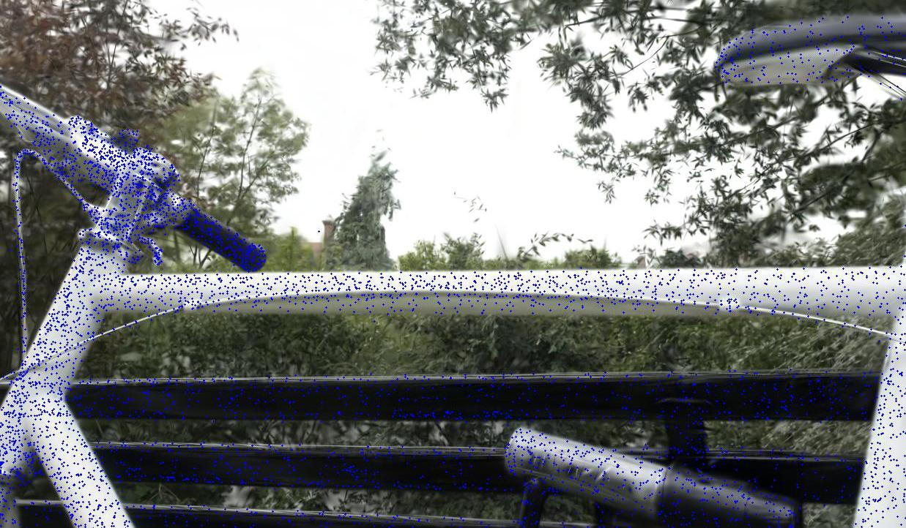
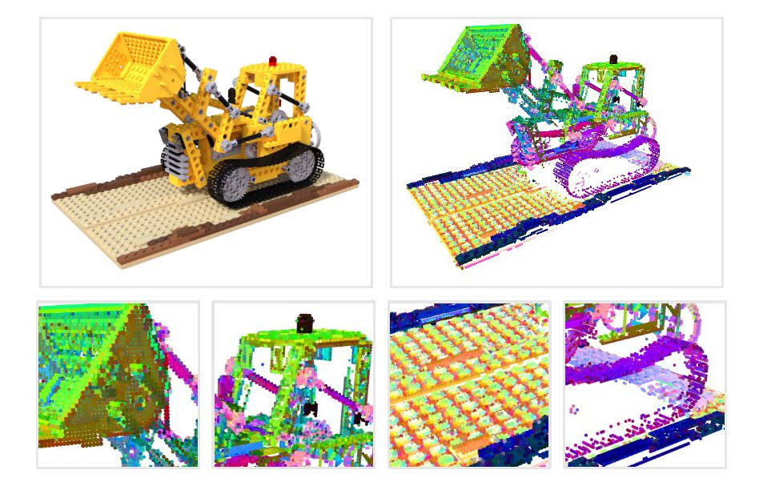

|
Interested in 3D vision, particularly for 3D data processing inlcuding point cloud and neural representation. |
|
|
 |
Dense point cloud reconstruction through Gaussian Splatting enables fast scene optimization within minutes. |
Direct visualization of MVS points and Gaussian centers in MeshLab.
Training progress of 'bicycle' with a single RTX 3090 (3 minutes is sufficient for data loading, training and saving).
|  |
Point cloud analysis in the context of Gaussian Splatting. Reorganizing the spatial distribution of Gaussians to construct an efficient scene representation. |
Publications
|  |
Compression of neural radiance fields via point cloud processing and 3D compression techniques. |
|
Point cloud attribute compression leveraging deep entropy coding. |
|
Rigid and non-rigid point cloud representation learning based on capsule. |
|
Weakly supervised point cloud segmentation through point query. |